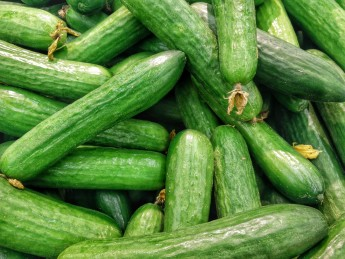

Ето няколко неща, които може да направите, за да намалите своя въглероден отпечатък
1. Използвайте торбички за многократна употреба, когато пазарувате

Така не само намаляте и употребата на пластмаса, но и въглерода, който се отделя за направата на пликче за еднократна употреба. Ако натиснете снимката, ще разберете как да направите сами такава торбичка.
2. Купувайте регионална храна
Транспортирането на храни, от далечни места изразходва гориво, което замърсява въздуха. Вместо да си купите краставици от Гърция, може да вземете от същите краставици с може би по-добро качество от някой пазар. Така също подкрепяте личния бизнес.
3. Изключвайте светлините, когато не сте в някоя стая
4. Къпете се с по-студена вода
Това може да спести около 250 килограма CO2 на година
5. Взимайте си по-къси душове
Докато сме на темата за душовете, защо просто всички да не си взимаме по-кратки душове? Пестим както и пари, така и опазваме природата.